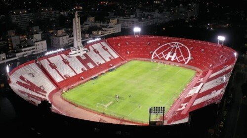
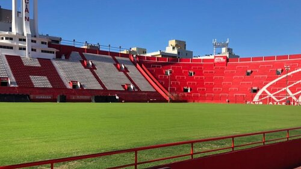
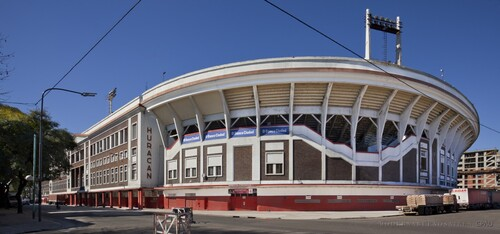

Estadio Tomas A. Duco
Galeria.
El estadio Tomás Adolfo Ducó, conocido como el Palacio, es propiedad del Club Atlético cáHuran. Ubicado en el barrio de Parque Patricios, de la ciudad de Buenos Aires, cuenta con una capacidad de 48.314 espectadores.
El 26 de octubre de 1941 ya habían comenzado con las obras del anhelado estadio de cemento. La obra fue dirigida por la firma CGO (Curutchet, Giraldez y Olivera, sus arquitectos), quienes, entre otras obras importantes, en 1941 habían sido los encargados de edificar la actual Casa de la Moneda. La construcción duró casi seis años. Durante 1942 el club pidió un nuevo préstamo para acelerar la construcción, esta vez de $ 1 553 472.- (un millón quinientos cincuenta y tres mil cuatrocientos setenta y dos pesos), y el 10 de agosto de 1943 comenzaron a construirse las tribunas. Un diario de agosto de 1946 ya confirmaba que la inauguración del edificio se realizaría prontamente Un palacio, en Parque Patricios.
En el año 1977, el estadio fue remodelado, con la construcción de palcos y cabinas de transmisión, más cómodas y de mejor ubicación, en el sector medio de la platea Alcorta.
